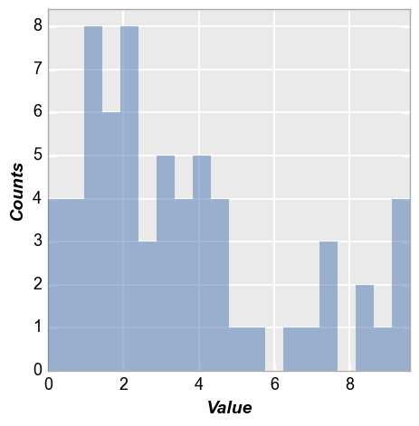
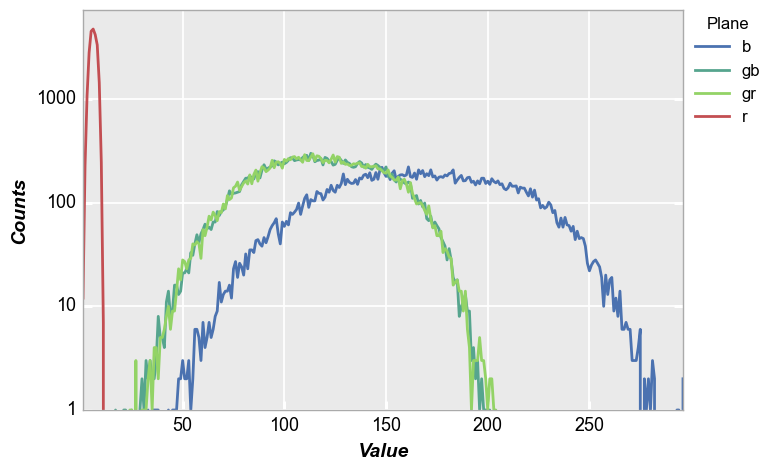

hist¶
- fcp.hist(**kwargs)¶
Histogram plot.
- Parameters
df (DataFrame | numpy array) – DataFrame or numpy array containing data to plot [when passing a numpy array it is automatically converted to a DataFrame]
- Keyword Arguments
x (str) – x-axis column name (i.e., the “value” column from which “counts” are calculated) [REQUIRED]
cdf (bool) – Convert the histogram into a cumulative distribution plot. Defaults to False. More details
cfa (str) – Color-filter array pattern that is used to split data from a Bayer image into separate color planes. Defaults to None. More details
hist_align (str) – If “mid” aligns center of histogram bar to x-axis value; if “left” aligns the left edge of the histogram bar to the x-axis value {“left”; “mid”; “right”}. Defaults to mid. More details
hist_bins|bins (int) – Number of histogram bins to use; when plotting the histogram of a raw image file the number of bins is automatically adjusted to enable one bin per DN code. Defaults to 20. More details
hist_cumulative|cumulative (bool) – From matplotlib: If True then a histogram is computed where each bin gives the counts in that bin plus all bins for smaller values; if -1 direction of accumulation is reversed. Defaults to False. More details
hist_edge_color (str) – Hex color string for the edge of the histogram bar.
Defaults to fcp.DEFAULT_COLORS . More detailshist_edge_width (float) – Width of the edge of the histogram bar in pixels. Defaults to 0. More details
hist_fill_alpha (int) – Transparency value for the histogram bars between 0-1. Defaults to 0.5. More details
hist_fill_color (str) – Hex color string of the histogram bar fill .
Defaults to fcp.DEFAULT_COLORS . More detailshist_horizontal|horizontal (bool) – Enable a horizontal histogram plot [default is vertical]. Defaults to False. More details
hist_kde|kde (bool) – Toggle visibility of a kernel-density estimator curve over the histogram bars. Defaults to False. More details
hist_normalize|normalize (bool) – Sets the “density” parameter for matplotlib-based plots; from matplotlib: if True draw and return a probability density: each bin will display each bin”s raw count divided by the total number of counts and the bin width so that the area under the histogram integrates to 1; automatically enabled if kde=True. Defaults to False. More details
hist_rwidth (float|None) – From matplotlib: the relative width of the bars as a fraction of the bin width; None means auto-calculation. Defaults to None. More details
pdf (bool) – Convert the histogram into a probability density function plot. Defaults to False. More details
Examples
Simple histogram:
>>> import fivecentplots as fcp >>> from pathlib import Path >>> import pandas as pd >>> df = pd.read_csv(Path(fcp.__file__).parent / 'test_data/fake_data_box.csv') >>> fcp.hist(df, x='Value')
Bayer-image histogram:
>>> import fivecentplots as fcp >>> from pathlib import Path >>> import pandas as pd >>> import numpy as np >>> # Make a dummy blue patch through an RGB filter >>> img_rgb = np.zeros([300, 300]).astype(np.uint16) >>> img_rgb[::2, ::2] = 180 # green_red >>> img_rgb[1::2, 1::2] = 180 # green_blue >>> img_rgb[::2, 1::2] = 10 >>> img_rgb[1::2, ::2] = 255 >>> # Add gaussian shading >>> x, y = np.meshgrid(np.linspace(-1,1,300), np.linspace(-1,1,300)) >>> dst = np.sqrt(x*x+y*y) >>> sigma = 1 >>> muu = 0.001 >>> gauss = np.exp(-( (dst-muu)**2 / ( 2.0 * sigma**2 ) ) ) >>> img_rgb = (gauss * img_rgb).astype(float) >>> # Add random noise >>> img_rgb[::2, ::2] += np.random.normal(-0.1*img_rgb[::2, ::2].mean(), 0.1*img_rgb[::2, ::2].mean(), >>> img_rgb[::2, ::2].shape) >>> img_rgb[1::2, ::2] += np.random.normal(-0.1*img_rgb[1::2, ::2].mean(), 0.1*img_rgb[1::2, ::2].mean(), >>> img_rgb[1::2, ::2].shape) >>> img_rgb[1::2, 1::2] += np.random.normal(-0.1*img_rgb[1::2, 1::2].mean(), 0.1*img_rgb[1::2, 1::2].mean(), >>> img_rgb[1::2, 1::2].shape) >>> img_rgb[::2, 1::2] += np.random.normal(-0.1*img_rgb[::2, 1::2].mean(), 0.1*img_rgb[::2, 1::2].mean(), >>> img_rgb[::2, 1::2].shape) >>> img_rgb = img_rgb.astype(np.uint16) >>> fcp.hist(img_rgb, ax_size=[600, 400], legend='Plane', cfa='grbg', colors=fcp.BAYER, **fcp.HIST)
